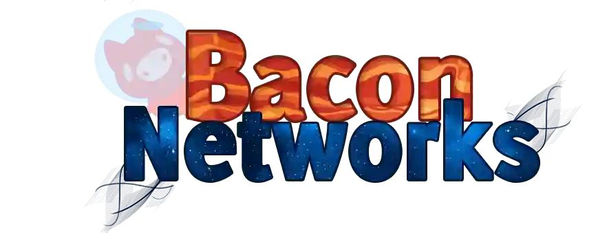

All The Mods 10
BacoNetworks is known for its active, friendly community and smooth performance, made possible by high-performance hardware and custom optimizations. This allows our Minecraft servers to handle upwards of 100 players with no lag. Our servers are hosted in Germany, providing low latency for European players and others worldwide. With a dedicated staff team and an active Discord community, we create a welcoming environment where new and experienced players can enjoy their time.
Start your adventure today!
